ТЕРРИТОРИЯ UNKNOWN
Место, где все новое несет открытия. Неизвестные технологии дают новые возможности и пути исследовать мир вокруг себя.
Неожиданное приключение покажет, кто ты на самом деле, что ты думаешь, чувствуешь наедине с природой.
Неизвестные символы и знаки рассказывают свои глубинные смыслы через природу.
Грозы стирают дистанцию, открывая путь к внешней и внутренней свободе. Вода символизирует смелые перемены внутри себя, проходя трансформацию от жидкости без формы до прочного льда, меняясь от тихого океана к разрушительному шторму. А камень может стать надежной опорой, непреодолимым препятствием или произведением искусства в ваших руках. Ветер может путать твои волосы или раздувать паруса и вести к цели.
МУЗЫКА
ДИДЖИТАЛ-ИНСТАЛЯЦИИ, ВИДЕО-АРТ
Собирай впечатления визуально, тактильно и аудиально.
Пространство вокруг кажется чистым, здесь нет ничего лишнего, ты сам можешь добавлять в него образы, звуки и ощущения.
Все ждет твоего внимания, но как распорядиться
временем и как интерпретировать
решаешь только ты.
МИССИЯ
TUNDRA UNKNOWN
Поддерживать новую среду, в которой независимая культура будет развиваться и находить своих агентов в актуально процессе, обмениваясь идеями и чувствами.
TUNDRA UNKNOWN — возможность для активной коммуникации акторов, выходящих за рамки субъектного мировоззрения.
Луч света говорит с вами, а вы влияете на миллиарды атомов вокруг,
электромагнитные волны отражаются от лесов, которые впитывают влагу
пост-цифровой реальности.
